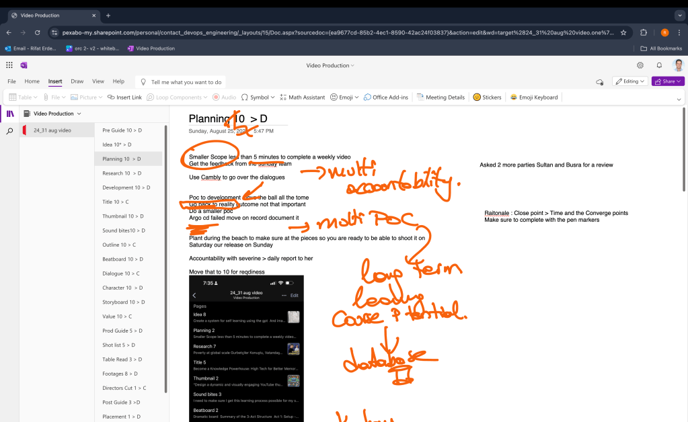
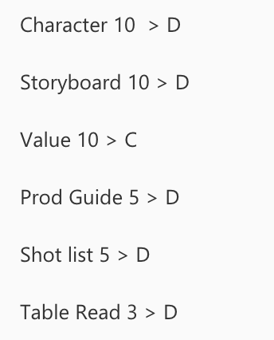
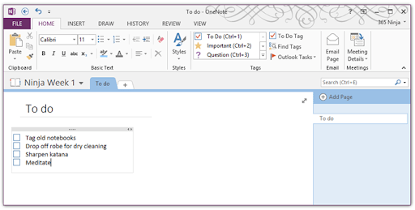
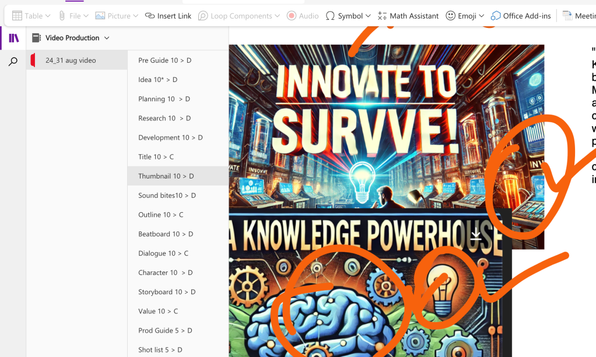

Streamlining Video Production with OneNote: My Iterative Process and Kanban Scoring System
As a video producer, managing multiple stages of production can often feel overwhelming. To keep everything on track, I rely on Microsoft OneNote as my organizational hub. This versatile tool allows me to create a digital Kanban board that I use to track progress and iterate on my video projects. In this blog post, I'll share my video production process, how I use OneNote to organize it, and the unique scoring system I've developed to ensure continuous improvement.
At every page there is a converge and divergence letter so i would always converge and create summaries/outlines for my work.
Main feature of OneNote is the drawing feature where it places the limbic part of your system one at the core!

My Video Production Process
The video production process typically involves several stages, each requiring careful planning and execution. Here’s a brief overview of the stages I go through:
-
Pre-Guide: This is where the canva guide and update my proces. I jot down all potential video video production process, no matter how wild they seem. Each idea of a process is noted on its initial potential.
-
** Idea Generation**: Idea is noted and iterated that is the starting point and i would evolve the idea till the point of 10 in kanban than there is no horizontal way to go. For a weekly video production it is around wednesday that it is closed off.
-
Planning and Research: Once an idea has been selected, I move into the planning phase. This involves creating outlines, identifying resources, and conducting research to ensure all content is factual and engaging. I would append it during the week and move the numbers up. Every thursday while i travel from Cambridge to Reading i would use onenote and drawing feature to highlight the points.
-
Development: During this stage, I act out the actions , such as create a github repo and implement what i need to implement and reach the real turn the systems on. Such as if the video is about a tcpdump in linux i would have a github repo that represents it.
-
Sound bites: During this stage, I flesh out the all the soundbites, refine the dialogue, and determine the overall structure of the video.I use the sound
-
Beatboard: I have the overall dramatic structure that i want to go through.
-
Storyboard: I visualise the process using gpt generated comics and i have a rough idea what i am about to be creating.
-
** Shot List Creation**: Visualizing the video is crucial. I use storyboards to sketch out scenes and develop a shot list to guide filming.
-
Production: This is where the actual filming happens. From setting up shots to directing actors and capturing footage, every detail is meticulously managed. Production also involved multiple pages such as dialogue,shot list ,guide and table reads.At the end there is a directors cut.
-
Post-Production: After filming, I move into editing, adding sound bites, refining dialogue, and applying special effects as needed.Pages are assembled from top to bottom and the top would always become and input for the bottom.
-
Review and Final Cut: The final stage involves reviewing the video, making any necessary edits, and preparing it for release.Every sunday we go over the review process.
Using OneNote to Manage the Process
Microsoft OneNote serves as the backbone of my organizational strategy. Here’s how I use it to manage the video production process:
- Creating a Digital Kanban Board: I create separate pages in OneNote for each stage of the production process. Each page serves as a column in my Kanban board, where I can track tasks from "zero to 10" and close off and have multi versions of the production in the same document

- Using Checklists and Tags: Within each page, I use checklists to break down tasks into actionable steps. I also use OneNote’s tagging feature to highlight priority tasks and deadlines.

- Incorporating Notes and Attachments: OneNote allows me to embed research notes, images, and even scripts directly into each page, keeping all relevant information at my fingertips.

Iterating with a Scoring System
To continually improve my workflow and video quality, I’ve implemented a unique scoring system that tracks progress across various stages:
-
Kanban Board Scoring: After each project, I review my Kanban board and score each stage on a scale from 1 to 10. For example, if the "Idea Generation" phase was particularly effective, I might score it a 10. If "Post-Production" was less smooth, it might receive a lower score.
-
Input and Analysis: I record these scores over time to identify patterns and areas for improvement. The higher score on top means the input is enough to move forward. If a particular stage consistently scores low, I know it’s an area that needs attention.
-
Iterative Improvements: The scores aren’t just for tracking—they’re for action. Based on the scores, I adjust my process, whether it’s dedicating more time to research or refining my editing techniques.
Benefits of This System
-
Enhanced Organization: Using OneNote and a digital Kanban board keeps me organized, ensuring no stage is overlooked.
-
Continuous Improvement: The scoring system fosters a mindset of continuous improvement, encouraging me to refine my process with every video.
-
Clear Visualization: OneNote’s visual tools allow me to see the entire production process at a glance, making it easier to identify bottlenecks and streamline workflow.
Conclusion
By combining OneNote with a structured Kanban board and a robust scoring system, I’ve been able to enhance my video production process significantly. This approach not only keeps me organized but also ensures continuous improvement with every project. If you're looking to streamline your own workflow, I highly recommend giving this method a try!
Feel free to share your experiences or ask questions in the comments below. I’d love to hear how you manage your own production processes!
Using OneNote and a structured scoring system can transform how you approach video production, ensuring each project is more refined than the last. Whether you're a seasoned producer or just getting started, these tools and techniques can help you stay organized and continually improve.
🔗 Connect with me:
-
💼 LinkedIn: https://www.linkedin.com/in/rifaterdemsahin/
-
🐦 Twitter: https://x.com/rifaterdemsahin
-
🎥 YouTube: https://www.youtube.com/@RifatErdemSahin
-
💻 GitHub: https://github.com/rifaterdemsahin
Imported from rifaterdemsahin.com · 2024